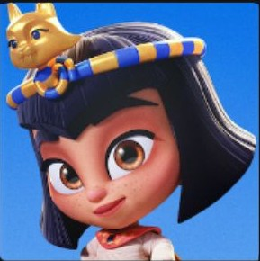

Pop
Culture
& Logic.
Diseñadora visual que analiza el mundo a través del color y lo traduce a varios idiomas.
Como @palomitas09, mi enfoque es una mezcla de intuición Cáncer y una disciplina analítica obsesiva. No solo hago que las cosas se vean bien; me aseguro de que cuenten una historia coherente, ya sea en español, inglés o francés. Viajar me ha enseñado que el buen diseño es el lenguaje universal que no necesita subtítulos.
Spanish
English
French
Identity
UX/UI
Art Direction
¿Quieres ver mi trayectoria completa?
Resumen profesional: Descargar CV
Resumen profesional: Descargar CV